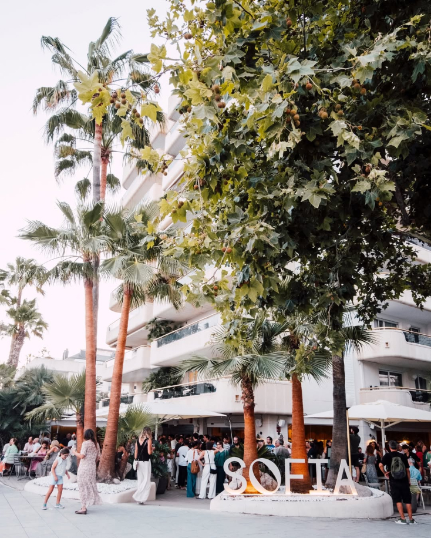
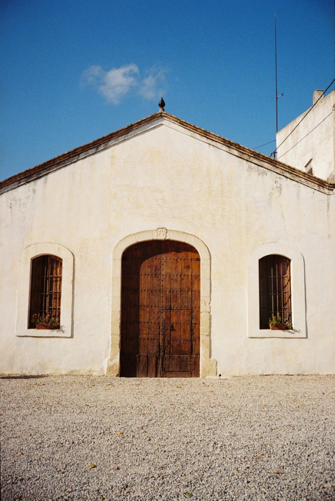
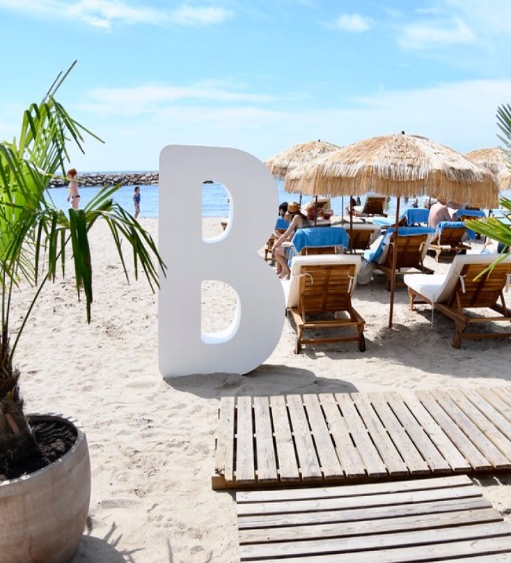

ITINERARY
WELCOME DRINKS
TIME
12TH JUNE 7PM
WHERE
Sofia by Picnic
Sitges Seafront
DETAILS
Welcome to Sitges! Get settled at your accommodation and then join us for welcome drinks in Sitges town centre.
Further details on the location and confirmed start time to follow.

WEDDING DAY
TIME
13TH JUNE 5PM
WHERE
Mas Palou
DETAILS
Have a leisurely breakfast and freshen up for the big day.
Transport to and from the venue is arranged for all guests. The pick up and drop off point is The ME Sitges Terramar and shuttles will leave for the venue at approx. 3.30pm (timing to be confirmed closer to the day). The journey is roughly 30 minutes.
If you miss the shuttle or choose to make your own way to the venue, please arrive for 4.30pm. There is plenty of parking if you choose to drive.
Sadly, all parties must come to an end, and we have a finish time of 2am. Shuttles will leave Mas Palou and return to Sitges throughout the evening (first and last shuttle time to be confirmed closer to the day).
Although we love your children, the wedding day will be adults only.
Dress Code is relaxed summer.

THE DEBRIEF
TIME
14TH JUNE 2PM
WHERE
Beso Beach
Sitges Seafront
DETAILS
Well obviously, we need dedicated time to gossip about the night before…
Further details on the location and confirmed start time to follow.
